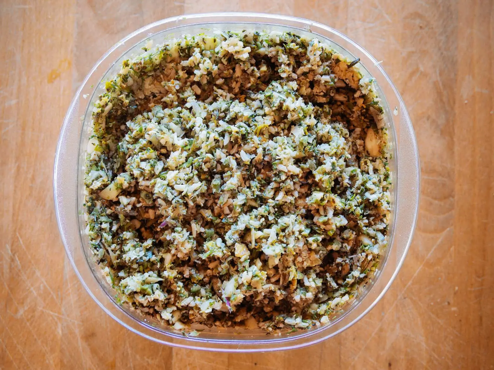

Home
recipe source
High Protein Dog Food

Description
This high protein dog food is a perfect meal for those
with that dawg in them and is a fantastic source of protein.
Ingredients
- 2 tablespoons coconut oil
- Ground turmeric for seasoning
- 2 1/2 pounds raw boneless meat of choice
- 1 pound raw vegetables of choice
- 1 pound cooked complex carbohydrates, cooled
- 4 clean crushed eggshells
Steps
- Heat a large skillet over medium-high heat. Melt the coconut oil in the skillet and swirl it around to coat the surface.
- Season the meat generously with ground turmeric. Add the meat to the skillet and saute on both sides until fully cooked (time varies according to the thickness and type of meat used).
- Transfer the meat to a cutting board. When cool enough to handle, coarsely chop the meat into 1-inch chunks. Set aside.
- Coarsely chop the vegetables into 1-inch chunks. Set aside.
- If your cooked complex carbohydrate is a grain (like rice) or legume (like lentils), you can leave it whole. If it's a starchy vegetable (like sweet potato), coarsely chop it into 1-inch chunks and set aside.
- Add the eggshells to the bowl of a food processor and pulse until finely crumbled.
- Add the meat and vegetables and pulse until finely chopped. (You may work in batches, if necessary.)
- Add the cooked carbs and pulse a few times to combine. You want the mixture to be fluffy, not mushy.
- Transfer the mixture to a large bowl, cover, and refrigerate. (Alternatively, you can transfer all or part of the mixture to a resealable plastic bag and freeze for future use. Thaw the frozen food in the refrigerator before using.)
- To serve, scoop the food into a bowl for your dog. (See Notes below for recommended serving amounts.)